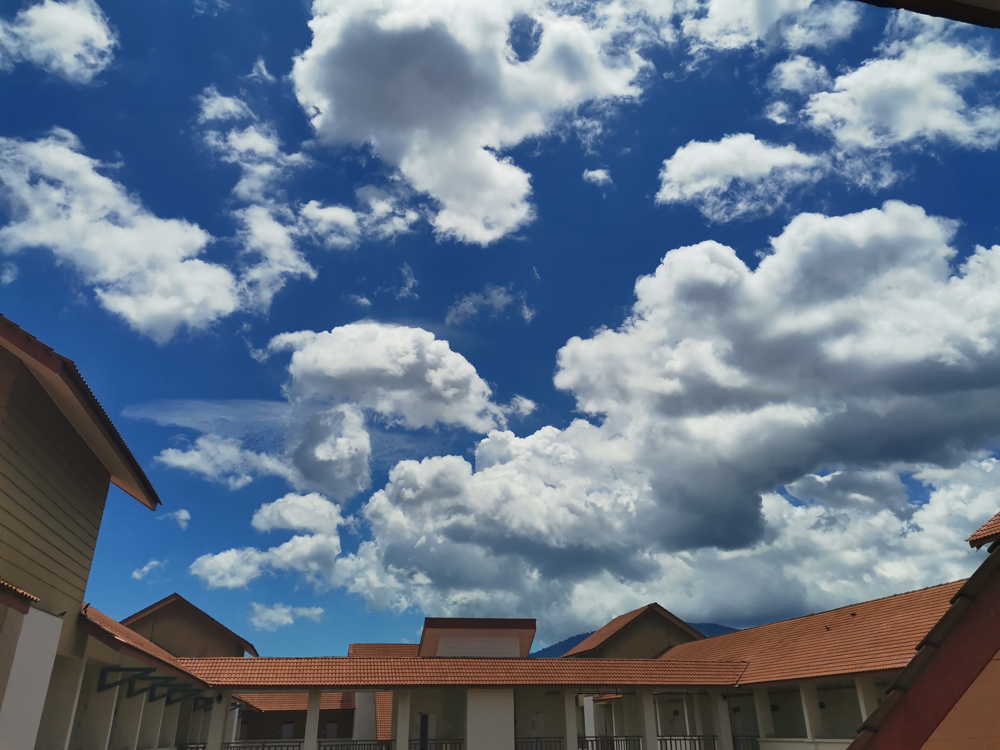

About Me
The name given is Siti Nurliyana Binti Mohd Nazri. I have living my 20 years searching for real me, to be better days by days. I am just an ordinary girl who live such a normal life full of love and hate. I can say that I am loving to spread positive vibes and happiness to people around me even if my days are not as good as people think. Also, I hate silent because silent makes me feel lonely. But, do not worry, because I rarely feel lonely!

Cats. I love them! I can stand my allergy to them as long as I can touch and caress that fluffy animal forever. However, my allergy is not that serious which forcing me to take medications or supplements. As I keep my sanitation well, I am good to be near with the cats. To add, I have a clowder of cats that I have been taken care of since younger but unfortunately, some of them died. I am looking forward to live with new cats.

Do you know that I am nephophilia? Nephophilia is someone who loves or obsesses of clouds. I do not notice that I am one of them until my habit taking photographs of clouds was told by my mother. Then, I realized. I have tons of clouds pictures taken using my smartphone.